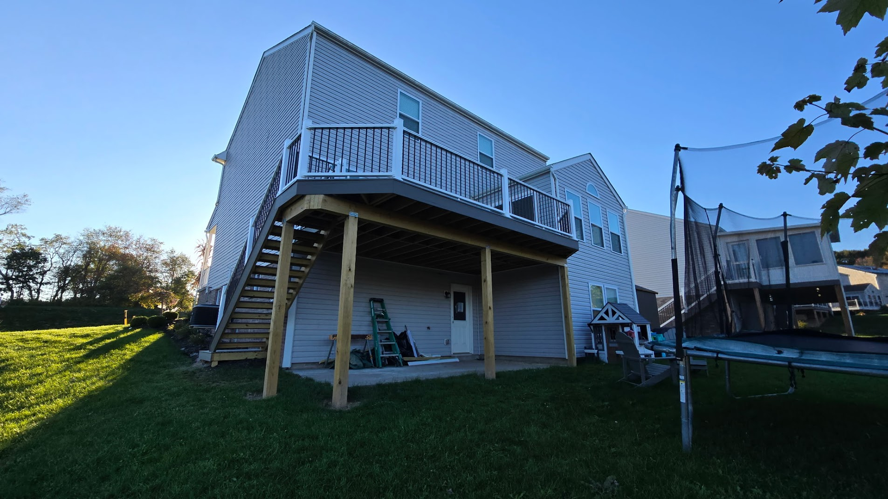
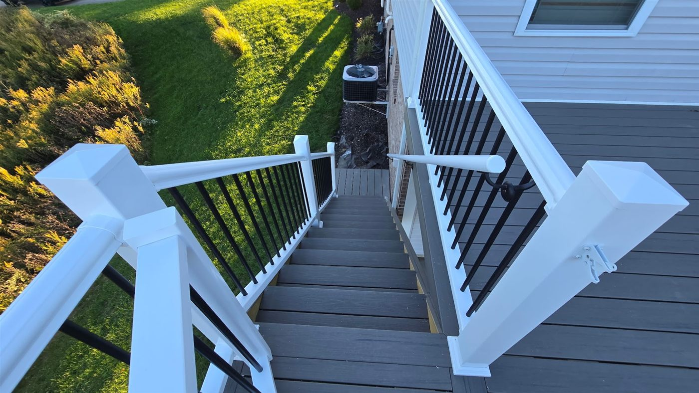
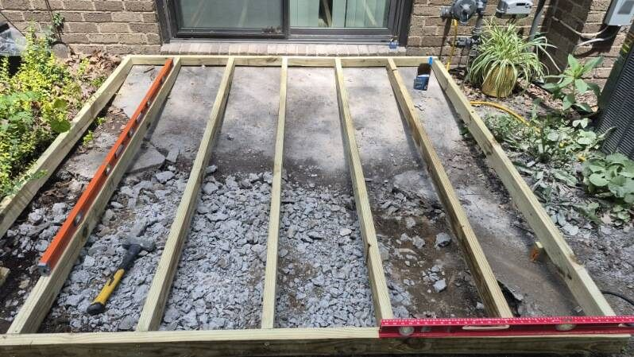
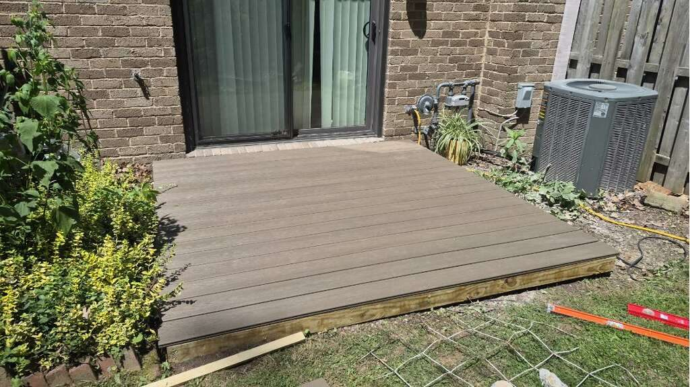

Deck Repair & Building in Moon Township, PA
From rotted boards and loose railings to stair repairs, framing issues, and partial rebuilds, Handled Home helps homeowners in Moon Township, Robinson, Sewickley, Coraopolis, and nearby Pittsburgh areas keep their decks safe, solid, and usable.
On desktop? Text deck photos directly to 412-353-5341.
Decks take a beating from weather, age, moisture, and normal wear. We handle the common repairs homeowners need to keep their outdoor space safe and usable.
Replace rotted, cracked, soft, or damaged deck boards and match them as closely as possible to your existing deck.
Learn More →Repair loose, wobbly, or unsafe railings so the deck feels secure again.
Learn More →Fix damaged steps, loose stair boards, weak stringers, or unsafe stair sections.
Learn More →Address sagging sections, damaged framing, soft areas, and other problems that need more than surface work. Note: larger structural concerns, load-bearing issues, or projects requiring permits may need further evaluation.
Learn More →Rebuild damaged sections of a deck without replacing the entire structure when a partial repair makes sense.
Learn More →Upgrade boards, railings, stairs, or layout details to improve how your deck looks and functions.
Learn More →Walk your deck before the season starts. These six symptoms mean something needs attention — sooner rather than later.
If a board compresses or gives slightly when you step on it, the wood has started to rot below the surface. It will fail faster than it looks.
Orange or brown streaks running down from nails or screws mean the fasteners are corroding. The surrounding wood is often saturated and starting to break down.
Some spacing is normal, but boards that have pulled apart, cupped, or bowed significantly have started to move — and won't move back on their own.
Push on your deck posts. If they move, the connection at the base or beam is failing. A wobbly post is a load-bearing problem, not a cosmetic one.
Surface splintering past normal weathering means the wood fibers are breaking down. A deck that splinters badly underfoot is a hazard, especially for kids and bare feet.
The bottom of a deck post sits close to the ground and holds the most moisture. Press a screwdriver into the base — if it sinks in easily, the post needs attention before it compromises the structure.
Deck problems usually start small: one soft board, one loose railing, one step that does not feel quite right. But those issues can turn into bigger safety problems if they are ignored.
We look at the visible issue and the surrounding area so the repair makes sense. The goal is not just to make the deck look better. The goal is to make it feel solid, safe, and usable again.
Our deck services cover the full range — from a single rotted board to a full section rebuild or new construction. Some decks only need repairs. Others need sections rebuilt, upgraded, or replaced. We can help you figure out what makes sense for your home and budget.
Build new sections or replace areas that are too far gone for a simple repair.
Improve the layout or usability of your deck so the space works better for your home. Adding shade? We also handle pergola kit installation over decks and patios.
We will be honest about whether a repair makes sense or whether part of the deck should be rebuilt.
We don't publish flat rates because deck repairs vary too much — but here's what actually affects the price so you know what to expect.
Replacing two rotted boards is a very different job from replacing a full deck run or rebuilding a stair section. The more material and labor involved, the higher the cost.
Pressure-treated lumber is the most common and affordable option. Cedar and composite materials cost more but hold up better over time. We match your existing material as closely as possible.
Replacing surface boards is simpler and faster than repairing framing, posts, or structural components. Railing repairs and stair work fall somewhere in between.
A ground-level deck is straightforward to work on. A second-story deck with limited access beneath it takes more time and care, which affects the overall estimate.
The fastest way to get an accurate estimate is to text us photos. We can usually give you a clear ballpark before we even visit the site.
Deck repair and deck building services throughout the area — including deck repair in Robinson Township, where most decks date to the 90s and 2000s and are now showing their age, and North Fayette Township, where larger lots mean more outdoor structures that need maintenance. Also serving Moon Township, Coraopolis, Sewickley, Aliquippa, Beaver County, and nearby Pittsburgh-area communities.
Yes. If the rest of the deck is in decent condition, we can replace damaged or rotted boards without rebuilding the whole deck.
Yes. We repair loose railings, damaged steps, weak stair sections, and other safety-related deck issues.
Yes. Photos are very helpful for deck repairs. Send clear pictures of the damaged area, the full deck, and any stairs or railings involved.
Yes, depending on the scope. We handle deck repairs, partial rebuilds, upgrades, and some new deck construction projects.
Repairs and replacements of existing surfaces generally do not. New deck construction, structural changes, or footings may require a permit depending on your municipality. Larger structural concerns may also warrant evaluation by a licensed contractor or engineer before work begins.
It depends on the scope. Replacing a few boards or tightening a railing might take two to four hours. Stair repairs, framing work, or larger board replacements can run a full day or more. We give you a time estimate along with the price estimate so there are no surprises.
We match the existing material as closely as possible. Most decks in the Pittsburgh area use pressure-treated lumber, and that is what we default to. If your deck uses cedar, composite, or another material, let us know when you reach out so we can plan accordingly.
No — stay off soft or punky areas until they are repaired. Rotted wood can fail without much warning, especially under load. If you are not sure how bad it is, keep people and furniture off the affected section and send us photos so we can assess the situation.
A recent deck build we completed in Moon Township — second-story composite decking, pressure-treated framing, full stair run, white vinyl post caps, and black aluminum balusters.


A ground-level composite deck we built in Moon Township over an old concrete patio — new pressure-treated framing and low-maintenance composite boards. Before and after.


Not sure if your deck needs repairs? Read our guide: 5 Signs Your Deck Needs Repair.
Deck repair for Moon Township homeowners usually comes down to Pittsburgh's climate doing what Pittsburgh's climate does. The freeze-thaw cycle through winter and early spring is hard on wood — water gets into existing cracks during cold snaps, boards split and cup, fasteners back out as wood expands and contracts, and by the time outdoor season arrives, a deck that seemed fine in October can have real problems by April. Soft boards, wobbly railings, and stair sections that shift underfoot are some of the most common calls we get from homeowners across Moon Township, Coraopolis, and Robinson as temperatures start warming up.
The older neighborhoods in Moon Township — Carnot, the corridors along Flaugherty Run and Thorn Run — often have decks that were built two or three decades ago and have been spot-patched over the years without anyone looking closely at the framing underneath. A replaced board on top of a compromised joist might look fine but won't hold for long. When we come out, we look at the whole picture — what's visible on the surface and what it suggests about what's underneath — and tell you what we find before any work starts.
The process is straightforward. Text us photos or we schedule a site visit, we give you a clear estimate with no surprises, and we set a date for the work. Most board replacements and railing repairs can be handled in a half-day to a full day. We match the replacement material as closely as possible to what's already on the deck, clean up when we're done, and make sure everything feels solid before we leave. If we find something during the repair that should be addressed — a soft spot that points to a framing issue, a post that's soft at the base — we tell you before doing additional work.
If your deck has been on your mind since last fall, reach out to Handled Home. We're based in Moon Township and can usually schedule within the week. Call or text us at 412-353-5341, or fill out the estimate form below.
Western PA's climate is genuinely hard on outdoor wood. Here's what we see most often — and why it happens.
Pittsburgh averages 30–40 freeze-thaw cycles per winter. Water works its way into cracks and end grain, freezes overnight, and expands — forcing boards to split, cup, and pull away from fasteners. By the time spring arrives, boards that looked fine in October can be spongy, cracked, or popped loose at the ends. This isn't neglect; it's just what Pittsburgh winters do to wood decks year after year. The fix is replacing the affected boards and re-securing any fasteners that have backed out.
Pittsburgh summers run humid — July and August often hit 80%+ relative humidity for weeks at a time. Moisture gets into the wood through end grain, around fasteners, and anywhere the protective finish has worn through. The places most prone to rot are the areas with the least airflow: boards against the house, sections around posts, and anywhere debris collects and holds moisture. By the time rot is visible on the surface, it has usually progressed further underneath. We probe suspect areas before writing off a board as surface damage only. If you're seeing rot at the edges or around fasteners, there's a good chance the same moisture issues are affecting exterior wood trim on the house itself.
Wood expands in heat and humidity, contracts in cold. Every seasonal cycle works fasteners slightly looser. Nails are particularly prone to this — they back out as the wood moves around them. Screws hold better but aren't immune. A deck where fasteners have backed out is noisy underfoot, has boards that move slightly when loaded, and has gaps at the fastener holes that let water in faster. We re-drive loose fasteners and replace any that have corroded or stripped out, using coated or stainless deck screws that won't rust in Pittsburgh's wet seasons.
An unfinished or poorly maintained wood deck in western PA doesn't just look bad — it ages faster. UV exposure breaks down the wood surface, opening it to moisture penetration. A deck that hasn't been cleaned and resealed in several years will have grayed, checked wood that holds water instead of shedding it. While finish work isn't our primary focus, we frequently repair boards that have deteriorated past the point where a new coat of stain would help and replace them with properly treated material that gives the deck a solid surface to work from again.
No surprises. Here's the process from first contact to finished repair.
Text us photos of the damaged area and the full deck to 412-353-5341. For most repairs, photos are enough to give you a clear ballpark — what the work involves, roughly how long it takes, and what it costs. We respond the same day in most cases.
Once the estimate is agreed on, we set a date. We're based in Moon Township and serve Robinson, Coraopolis, Sewickley, and surrounding communities — we're not driving from across the county, which means scheduling is usually within a week or so depending on the season. We give you a specific arrival window, not a four-hour block.
We start every job by walking the deck and looking beyond the specific repair you called about. If you told us about a soft board, we'll check the boards around it and probe the surrounding area before any work starts. If we find something that changes the scope — a joist that's also soft, additional boards that are further gone than they looked in photos — we tell you before doing anything, and you decide how to proceed.
Board replacements, railing repairs, and stair work are hands-on, no-mystery jobs. We remove what needs to come out, assess the framing beneath it, and install the replacement material correctly — proper fasteners, correct spacing, flush with the surrounding deck surface. We match the wood species and treatment to what's already on the deck as closely as possible.
We pick up all removed material, sweep the deck surface, and walk you through what was done before we leave. If we noticed anything else during the repair worth keeping an eye on — a board that isn't bad yet but will need attention next season, a post base that has some wear — we'll point it out so you're not surprised later. We don't chase upsells; we just tell you what we saw.
Deck repairs often happen at the same time homeowners notice other things that need attention — rotted window trim or fascia, a door that doesn't latch right, or caulking that's failed around windows. We handle all of it. If you have a list, bring it — we can usually knock out multiple items in one visit.
It depends on what needs fixing and how much of it. Replacing two or three rotted boards typically runs a few hundred dollars in labor plus materials. A stair section repair or significant railing work can run more. Framing repairs and partial rebuilds are priced on scope after we see them in person. The fastest way to get a real number is to text us photos — we can usually give you a clear ballpark before scheduling a visit. We don't publish flat rates because the range is wide enough that a number without context would be misleading.
Repairs make sense when the damage is localized — a few rotted boards, a loose railing section, a stair that's shifted. If the framing underneath is sound and the majority of the deck surface is in reasonable shape, repair is almost always the right call. Replacement starts making sense when rot has worked its way into the rim joists or ledger board, when posts are soft at the base, or when repairs would cost more than a significant fraction of what a new deck would run. We'll give you an honest read when we look at it — we don't push replacement when repair is the right answer.
Most board replacements and railing repairs are done in a half-day to a full day. Stair work, larger framing repairs, or situations where we find more damage than expected can run longer. We give you a time estimate alongside the price estimate before we schedule. If the work ends up taking longer because of something we find once we're into it, we talk to you before adding to the scope.
Replacing damaged boards, repairing railings, and fixing stairs on an existing deck generally don't require a permit in Moon Township — that falls under maintenance and repair. New deck construction, changes to footings, or significant structural work is a different story and may require a permit depending on the scope. If there's any question about your specific situation, Moon Township's building department can confirm. We'll let you know if we think your project is in a gray area before we start.
For a repair, the honest default is to match what's already on your deck — mixing pressure-treated wood and composite in the same run looks patched and the boards weather differently. If your deck is wood and only a few boards are gone, we replace them with matching pressure-treated (or cedar) lumber. If you're replacing a larger section or the whole surface, composite is worth considering: it costs more up front but doesn't rot, splinter, or need staining, which pays off over Pittsburgh's freeze-thaw winters and humid summers. Wood costs less and can be stained any color, but it needs periodic sealing to hold up. When we look at your deck we'll tell you which makes sense for the scope and your budget — we don't push composite on a two-board repair.
Yes. Handled Home is fully insured for all handyman and home repair work, including deck repairs, stair work, railing repairs, and deck building. PA Contractor Registration PA217831. You can ask to see proof of insurance before work starts — we'll provide it without hesitation.
Fill out the form below and we'll get back to you quickly. Or call/text us directly at 412-353-5341.